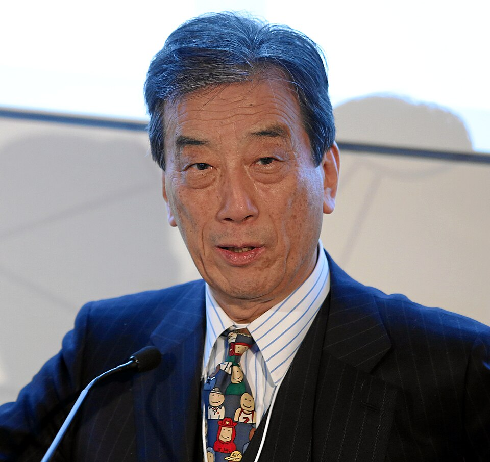
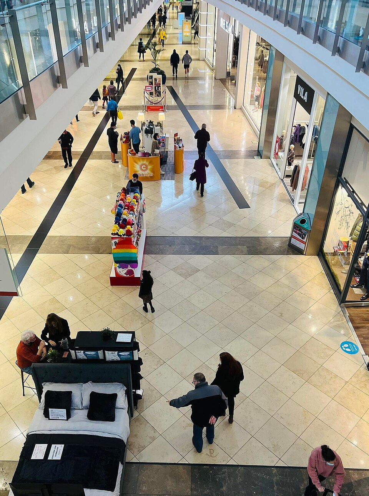

勝
勝俣恒久
かつまた・つねひさ
東京電力会長
役割：一審で津波対策を指示すべき立場と認定された
その後：高裁で一審責任を取り消し。2024年10月21日死去1
2002年〜2026年11月15日
株主側は、東京電力の旧経営陣が2002年の長期評価と2008年の津波試算を知りながら対策を先送りし、2011年の福島第一原発事故で会社に巨額損害を生じさせたと主張した。1
東京地裁は2022年、勝俣恒久、清水正孝、武黒一郎、武藤栄の4人に東電へ13兆3210億円を連帯して支払うよう命じたが、東京高裁は2025年に一審を取り消し。請求を棄却した。1
2026年11月15日時点で株主側は最高裁に上告・上告受理申立てをしており、最高裁判決・受理決定は未確認である。1

2002年7月31日、地震調査研究推進本部は、三陸沖から房総沖にかけての地震活動の長期評価を公表した。評価は福島県沖を含む日本海溝沿いでM8級のプレート間地震が起きる可能性を示し、福島県沖の30年以内の発生確率を20％程度とした。東電が従来用いていた津波想定は敷地高O.P.+10m、非常用海水ポンプ周辺O.P.+5.7m程度だった。8月5日には原子力安全・保安院の担当者が福島県沖を含む計算を促したが、一審判決は東電担当者が計算自体を拒み、保安院もそれ以上求めなかったと認定した。1
この時点で争点になったのは、長期評価を規制上の確定した設計条件として扱うか、それとも研究上の不確実性を含む情報として扱うかだった。後の民事裁判では、同じ資料が、対策を開始すべき危険情報であるという一審の評価と。運転停止を正当化するほどの信頼性はないという高裁の評価に分かれた。2
平成２０年２月１６日の御前会議では、四つの議題の一つとして、東電地震対策センター主管の「Ｓｓに基づく耐震安全性評価の打ち出し方について」が挙げられていた。 津波高の想定が、従来はＯ．Ｐ．＋５．５ｍであったのが、見直し（案）としては、Ｏ．Ｐ．＋７．７ｍ以上となり、詳細評価によってはさらに大きくなる可能性があることが記載されていた。
意味：経営層が出席する会議で、津波想定の引上げと対策検討が示されていたことを認定している。
2008年2月16日の御前会議では、津波高の想定を従来のO.P.+5.5mからO.P.+7.7m以上へ変更する案が議題となり、詳細評価でさらに大きくなる可能性も示された。会議には勝俣恒久、清水正孝、武黒一郎。武藤栄らが出席した。4月、東電設計は長期評価と明治三陸地震の断層モデルを用い、最大O.P.+15.7mの試算を東電に報告した。従来の敷地高を超え、非常用電源設備や海水ポンプの浸水リスクを示す数値だった。1
御前会議の記録と東電設計の試算は、技術部門の情報が経営層に届いた経路を示す資料として扱われた。東電自身の事故調査資料も、2008年の試し計算で15.7mの津波水位が得られたことを記録している。一方、東電はその波源モデルの妥当性は不明だったと説明しており、試算の存在を認めることと。対策義務を認めることは同じではないと主張している。34
敷地南側で津波高が最大Ｏ．Ｐ．＋１５．７ｍ、１０ｍ盤の浸水深５．７ｍとなり、１０ｍ盤上にある１号機～４号機の建屋が浸水することから、敷地北部・南部からの敷地への遡上及び港内から４ｍ盤への遡上についての津波対策が必要であった。
意味：2008年試算が、建屋浸水と具体的な対策必要性を示していたことを示す。
2008年6月から7月にかけて、東電社内では防潮壁、重要機器室やタービン建屋の水密化。電源設備の移設などが検討された。一審は、2008年から2011年までに施工する時間的・技術的可能性があったと認定した。判決が認定した経過では、武藤副社長らに試算と対策方針が報告され、担当者は長期評価を無視できないと説明した。しかし東電は7月、長期評価に基づく対策を先送りする方針を決めた。試算は事故の4日前まで保安院に報告されなかった。1
国会事故調は、東電が津波の確率論的安全評価を技術的不確実性を理由に実施せず、対策検討を先延ばしにしていたと記した。耐震バックチェックでも、最終報告の予定が2009年6月から2016年1月へ延ばされ、1〜3号機では事故時点でも補強工事が実施されていなかった。5
一審被告ａ４は、東電土木グループに対し、津波ハザードの検討内容について詳細に説明すること、４ｍ盤への遡上高さを低減するための概略検討を行うこと、沖に防波堤を設置するために必要となる許認可を調べること、並行して機器等の対策についても検討することを指示したが、明治三陸試計算を前提とする対策工を講ずるかどうかについての結論は示さなかった。
意味：対策の検討指示はあったが、最終的な実施決定が示されなかったことを示す。
2011年3月11日、地震と津波が福島第一原発を襲った。非常用電源設備や冷却系が浸水し、全交流電源を喪失したことで原子炉冷却機能が失われ、1〜3号機で炉心損傷・炉心溶融が発生した。原子炉建屋では水素爆発が起き、放射性物質が放出された。東電は被災者への賠償、廃炉・汚染水対策、除染・中間貯蔵対策を負担し。後に一審はこれらを合計13兆3210億円と認定した。2012年には原子力損害賠償・廃炉等支援機構が東電株式を1兆円で引き受けた。26
一審判決が示した内訳は、被災者賠償7兆0834億円、廃炉・汚染水対策1兆6150億円。除染・中間貯蔵対策4兆6226億円である。株主代表訴訟では、この会社損害と、事故前の取締役の判断との因果関係が。津波の予見可能性と並ぶ中心的な争点になった。2
試し計算の結果からは、福島第一原子力発電所取水口前面で、津波水位は最大１５．７ｍの津波の高さが得られた。
意味：東電自身の事故調査資料にも、15.7m試算が記録されている。
事故後、国会事故調は、東電と規制当局がリスクを認識しながら対応を取らなかったことを事故の根源的原因と位置付けた。2011年11月15日、株主は東電監査役に対し、勝俣ら旧経営陣の責任を追及する訴訟を提起するよう請求した。監査役が提訴不要との不提訴理由を通知したため、株主は2012年3月5日、会社法847条3項に基づく株主代表訴訟を提起した。賠償金は株主個人ではなく会社に支払われる仕組みである。51
東電はこの危険性を軽視し、安全裕度のない不十分な対策にとどめていた。 一方で津波の確率論的安全評価が技術的に不確実であるという理由で実施せず、対策の検討を先延ばしにしていた。
意味：国会事故調が、リスク認識後の東電の対応を厳しく評価した箇所である。
2022年7月13日、東京地裁は勝俣、清水、武黒、武藤の4人に。東電へ連帯して13兆3210億円と遅延損害金を支払うよう命じた。小森明生への請求は棄却した。刑事事件では、勝俣、武黒、武藤が無罪となり。2025年3月5日に武黒と武藤の無罪が確定した。民事の控訴審で東京高裁は2025年6月6日、一審を取り消して株主側請求を棄却した。株主側は6月20日に上告し、10月10日付で上告受理申立理由書を提出した。2026年11月15日時点で最高裁判決・受理決定は未確認である。127
１ 控訴人たる一審原告らの各控訴をいずれも棄却する。 ２ 控訴人ａ１－２らの各控訴に基づき、原判決中控訴人ａ１－２らの各敗訴部分をいずれも取り消す。 ３ 前項の部分につき、一審原告らの請求をいずれも棄却する。
意味：一審の巨額賠償認定を取り消し、旧経営陣への請求を退けた控訴審の結論である。
高裁は、長期評価に信頼性の留保があり、信頼度評価が「C（やや低い）」だったこと、中央防災会議や地方自治体が防災対策の前提に採用していなかったこと。専門家の間で見解が分かれていたことを重視した。株主側は、高裁が取締役に過度に高度な予見可能性を要求し、会社法423条1項と経営判断原則の審査を誤ったと主張している。旧経営陣側は、長期評価と15.7m試算は運転停止を直ちに義務付けるほど合理性・信頼性のある根拠ではなく、津波対策には重大な経営判断が必要だったと主張している。28
２００８年には、耐震安全性評価の検討を進める中で、明治三陸沖津波の波源モデルを福島県沖の海溝沿いに持ってきた試算（結果：１５．７ｍ）を行っていますが、この波源モデルの妥当性は不明であった。
意味：東電は15.7m試算の存在を認めつつ、そのモデルの妥当性に疑義を示していた。
一審と高裁は、同じ長期評価、御前会議、15.7m試算、対策検討の経過を前提にしながら、取締役がいつ具体的な事故を予見できたかと。どの対策を命じるべきだったかを異なる基準で判断した。一審は、敷地高を超える試算と複数の対策手段が示された後も実施決定がなかった点を重視した。高裁は、長期評価の信頼性の留保、専門家の見解の相違。原発停止を伴う判断の重大性を重視した。12
刑事裁判でも、勝俣、武黒。武藤について業務上過失致死傷罪の無罪が維持された。民事では清水を含む4人の責任が一審で認定されたが、高裁は旧経営陣側の控訴に基づき一審敗訴部分を取り消した。刑事責任、民事責任、規制上の対応はそれぞれ異なる手続で判断されており、2026年11月15日現在。民事の最終判断は未確認である。92
株主側が提出した上告受理申立理由書では、高裁判決の予見可能性と経営判断原則の判断が争われている。最高裁の判決・受理決定は、2026年11月15日時点で未確認である。710
2026年11月15日現在、最高裁判決・受理決定は未確認であり、民事手続は終結していない。10


| 東京電力ホールディングス本社 | 東京都千代田区内幸町1-1-3 | 事故対応・経営判断・株主訴訟の会社側中心地 | 21 |
| 福島第一原子力発電所 | 福島県双葉郡大熊町大字夫沢字北原22 | 津波、全電源喪失、炉心溶融の現場 | 2 |
| 東京地方裁判所 | 東京都千代田区霞が関1-1-4 | 2022年一審判決 | 22 |
| 東京高等裁判所 | 東京都千代田区霞が関1-1-1 | 2025年控訴審判決 | 23 |
| 最高裁判所 | 東京都千代田区隼町4-2 | 株主側上告・上告受理申立ての審理先 | 24 |
| 原子力規制委員会 | 東京都港区六本木1-9-9 | 事故後の新規制基準・規制制度の中心 | 25 |
| 国会議事堂 | 東京都千代田区永田町1-7-1 | 国会事故調設置・報告書の制度的起点 | 5 |
| 原子力損害賠償・廃炉等支援機構 | 東京都港区虎ノ門1-1-18 | 東電への公的資金・株式引受け | 6 |
株主が監査役への提訴請求を経て会社に代わって旧経営陣を訴え、事故による賠償・廃炉・除染費用と公的支援が東電に集中した流れを示す。16
かつまた・つねひさ
東京電力会長
役割：一審で津波対策を指示すべき立場と認定された
その後：高裁で一審責任を取り消し。2024年10月21日死去1
しみず・まさたか
東京電力社長
役割：事故時の社長として安全対策の情報伝達系統にいた
その後：一審で責任認定、高裁で請求棄却1
たけくろ・いちろう
代表取締役副社長・原子力担当
むとう・さかえ
代表取締役副社長・原子力・立地本部長
こもり・あきお
原子力品質・安全部長
役割：安全部門の責任者として津波リスク情報に関与
その後：一審・高裁とも請求棄却2
かわい・ひろゆき
株主側弁護団長
役割：旧経営陣の取締役責任を主張
その後：最高裁での審理を求めている19
くろかわ・きよし
国会事故調委員長
役割：事故の根源的原因と規制対応を報告
その後：国会事故調報告書を公表5
はたむら・ようたろう
政府事故調委員長
役割：政府事故調の調査・検証を統括
その後：政府事故調最終報告を公表14
てらさか・のぶあき
原子力安全・保安院長
役割：事故前の規制当局側の責任が検討された
その後：個別の本件民事責任は未確認5
さたけ・けんじ
地震・津波研究者
役割：津波予見可能性をめぐる専門家意見で言及
その後：上告受理申立理由書で言及7
事故会社
役割：事故後の賠償・廃炉・除染費用を負担
その後：株主代表訴訟の賠償受領主体21
公的支援機関
役割：東電株式1兆円を引き受け
その後：事故後の資金援助を実施6
事故前の規制当局
役割：2002年に長期評価を踏まえた計算を促した
その後：事故後に規制組織が再編1
技術委託先
役割：2008年に最大O.P.+15.7mの試算を報告
その後：本件試算が判決で検討された1
株主代表訴訟原告
役割：監査役の不提訴後に会社に代わって提訴
その後：高裁棄却後に最高裁へ上告10
相関図は、津波情報を受けた旧経営陣と安全部門、試算を行った技術委託先、責任を追及した株主側。規制・調査機関を分けて示す。線の種類は、上下関係、協力、対立、告発。金銭関係を表す。
上司と部下。事故時の会長と社長。2008年の御前会議など経営層の情報共有の場で、津波・耐震バックチェックに関する方針を共有する立場だった。東京地裁判決1
上司と部下。会長と原子力担当副社長。御前会議には両者が出席し、津波想定や耐震対策の情報が経営層に上がる構造だった。東京地裁判決1
上司と部下。会長と原子力・立地本部長。長期評価・試算を踏まえた対策方針の検討を受ける関係だった。東京地裁判決1
上司と部下。社長と代表取締役副社長。安全対策の実施方針を経営会議に上げる関係だった。東京地裁判決1
上司と部下。社長と原子力・立地本部長。2008年の津波試算・対策検討の情報伝達系統上の上位者と担当責任者だった。東京地裁判決1
盟友ではなく職務上の同僚。いずれも原子力担当の代表取締役副社長。刑事事件でも同じ被告人となり、長期評価と15.7m試算の認識が争点になった。AP26
上司と部下。武藤は原子力・立地本部長、小森は原子力品質・安全部長。小森の任務懈怠時点は2010年7月頃以降と一審・高裁で整理された。東京高裁判決2
上司と部下。武黒は原子力担当副社長、小森は安全部門責任者。津波リスクの技術情報を経営層へ伝える上下関係にあった。東京地裁判決1
上司と部下。御前会議で社長・会長に対し、原子力部門の検討状況を報告する仕組みの中にいた。東京地裁判決1
上司と部下。社長と安全部門責任者。安全対策の実施・報告が経営判断に接続する関係だった。東京地裁判決1
対立・確執。株主側弁護団長と被告旧会長。河合は取締役責任を主張し、勝俣側は高裁で一審判決の取消しを求めた。東京高裁判決2
対立・確執。株主代表訴訟で、株主側は清水の安全対策指示義務違反を主張し、一審は認容。高裁は否定した。東京地裁判決1
裏切り・告発。株主は2011年11月に提訴を請求したが、監査役は提訴不要と通知したため、株主が会社に代わって提訴した。東京地裁判決1
対立・確執。保安院担当者は2002年に長期評価に基づく計算を促したが、東電担当者は計算を拒否したと一審が認定した。東京地裁判決1
資金の出し手と受け手。東電が委託し、東電設計が2008年に15.7m試算を報告した。個人的な関係や金銭的不正は未確認。東京地裁判決1
長期評価の見解を無視して耐震バックチェックを進めることは困難であることや、これに基づく対策等の必要性があることについて、一審被告ａ４に対し、一つ一つ順に説明を行った。 理学的には否定できない上、専門家が取り入れなければならないと言っているので、バックチェックの審査を通すためには取り入れなければならない旨を述べた。
意味：社内技術担当者が、長期評価を無視できないと説明していた場面である。
判決文、国会事故調、政府事故調、東電事故調報告書を確認した範囲では、暴力団、総会屋、仕手筋、右翼団体、反社会的勢力、海外口座。裏金の関与は確認できない。以下は確認できない項目を明示する。
組織・人物未確認 確認できない
組織・人物未確認 確認できない
人物未確認 確認できない
団体・人物未確認 確認できない
政治家未確認 確認できない
人物未確認 確認できない
口座・法人未確認 確認できない
人物・組織未確認 確認できない
科学的に詳細な予測はできなくても、可能性が否定できない危険な自然現象は、リスクマネジメントの対象として経営で扱われなければならない。新知見で従来の想定を超える津波の可能性が示された時点で、原子炉の安全に対して第一義的な責任を負う事業者に求められるのは、早急に対策を進めることであった。
意味：不確実性を理由にせず、経営判断として安全対策を進めるべきだったという報告書の核心である。
| 東京地裁 | 2022-07-13 | 東電へ連帯して13兆3210億円および年5分の遅延損害金 |
| 東京高裁 | 2025-06-06 | 一審を取り消し、株主側請求を棄却 |
善管注意義務・忠実義務違反。最高裁判決・受理決定は2026年11月15日時点で未確認12
| 東京地裁 | 2022-07-13 | 請求棄却 |
| 東京高裁 | 2025-06-06 | 責任否定部分を維持 |
取締役としての任務懈怠。確認できた控訴審判決で請求棄却2
| 東京地裁 | 2019-09 | 3人無罪 |
| 東京高裁 | 2023-01-18 | 無罪維持 |
| 最高裁 | 2025-03-05 | 武黒・武藤の無罪確定。勝俣は死亡により公訴棄却 |
| 原子力規制委員会 | 2013年以降 | 新規制基準、重大事故対策、バックフィットを実施 |
１ 控訴人たる一審原告らの各控訴をいずれも棄却する。 ２ 控訴人ａ１－２らの各控訴に基づき、原判決中控訴人ａ１－２らの各敗訴部分をいずれも取り消す。 ３ 前項の部分につき、一審原告らの請求をいずれも棄却する。
意味：一審の巨額賠償認定を取り消し、旧経営陣への請求を退けた控訴審の結論である。
一審原告らは、原審において、東京電力の取締役であった一審被告らにおいて、福島県沖で大規模地震が発生し、福島第一原発に津波が遡上して過酷事故が発生することを予見し得たから、そのような過酷事故の防止に必要な対策を福島第一原発に速やかに講ずべきであったのに、これを怠った取締役としての善管注意義務違反等の任務懈怠があったと主張した。
意味：株主側が旧経営陣に問うた責任の構造を裁判所が整理した部分である。
平成２０年２月１６日の御前会議では、四つの議題の一つとして、東電地震対策センター主管の「Ｓｓに基づく耐震安全性評価の打ち出し方について」が挙げられていた。 津波高の想定が、従来はＯ．Ｐ．＋５．５ｍであったのが、見直し（案）としては、Ｏ．Ｐ．＋７．７ｍ以上となり、詳細評価によってはさらに大きくなる可能性があることが記載されていた。
意味：経営層が出席する会議で、津波想定の引上げと対策検討が示されていたことを認定している。
敷地南側で津波高が最大Ｏ．Ｐ．＋１５．７ｍ、１０ｍ盤の浸水深５．７ｍとなり、１０ｍ盤上にある１号機～４号機の建屋が浸水することから、敷地北部・南部からの敷地への遡上及び港内から４ｍ盤への遡上についての津波対策が必要であった。
意味：2008年試算が、建屋浸水と具体的な対策必要性を示していたことを示す。
長期評価の見解を無視して耐震バックチェックを進めることは困難であることや、これに基づく対策等の必要性があることについて、一審被告ａ４に対し、一つ一つ順に説明を行った。 理学的には否定できない上、専門家が取り入れなければならないと言っているので、バックチェックの審査を通すためには取り入れなければならない旨を述べた。
意味：社内技術担当者が、長期評価を無視できないと説明していた場面である。
一審被告ａ４は、東電土木グループに対し、津波ハザードの検討内容について詳細に説明すること、４ｍ盤への遡上高さを低減するための概略検討を行うこと、沖に防波堤を設置するために必要となる許認可を調べること、並行して機器等の対策についても検討することを指示したが、明治三陸試計算を前提とする対策工を講ずるかどうかについての結論は示さなかった。
意味：対策の検討指示はあったが、最終的な実施決定が示されなかったことを示す。
東電はこの危険性を軽視し、安全裕度のない不十分な対策にとどめていた。 一方で津波の確率論的安全評価が技術的に不確実であるという理由で実施せず、対策の検討を先延ばしにしていた。
意味：国会事故調が、リスク認識後の東電の対応を厳しく評価した箇所である。
科学的に詳細な予測はできなくても、可能性が否定できない危険な自然現象は、リスクマネジメントの対象として経営で扱われなければならない。新知見で従来の想定を超える津波の可能性が示された時点で、原子炉の安全に対して第一義的な責任を負う事業者に求められるのは、早急に対策を進めることであった。
意味：不確実性を理由にせず、経営判断として安全対策を進めるべきだったという報告書の核心である。
○菅（直）委員 全く答えになっていません。 電話一本だってかけられるじゃないですか。武黒元副社長に電話一本、こういうことが起きたとかけられるじゃないですか。
意味：事故当時の情報伝達をめぐり、参考人答弁を正面から追及した発言である。
○小早川参考人 事故の根本原因を分析し、その背後要因として、安全意識、技術力、対話力の不足という問題があり、安全は既に確立されたものと思い込み、事故の備えが不足したという結論に至っております。
意味：東京電力側が、事故の背景を安全意識等の不足として説明した箇所である。
試し計算の結果からは、福島第一原子力発電所取水口前面で、津波水位は最大１５．７ｍの津波の高さが得られた。
意味：東電自身の事故調査資料にも、15.7m試算が記録されている。
２００８年には、耐震安全性評価の検討を進める中で、明治三陸沖津波の波源モデルを福島県沖の海溝沿いに持ってきた試算（結果：１５．７ｍ）を行っていますが、この波源モデルの妥当性は不明であった。
意味：東電は15.7m試算の存在を認めつつ、そのモデルの妥当性に疑義を示していた。
規制当局から独立した新組織として原子力規制委員会・原子力規制庁が発足した。12
津波・地震、重大事故、電源喪失。可搬型設備等を含む基準が強化された。28
既設原発にも新規制基準への適合を求める制度が導入された。27
福島事故以前に規制対象外だった重大事故対策が規制要件化された。12
賠償・廃炉資金を確保するため、機構による資金援助と株式引受けが行われた。6
政府事故調、国会事故調、東電事故調等の報告書が公開された。14
株主側：2002年長期評価、2008年の最大O.P.+15.7m試算、社内会議から。経営陣は津波による全電源喪失と炉心溶融を予見できたと主張している。1
旧経営陣・東電側：長期評価は科学的確実性に乏しく、15.7m試算は明治三陸地震モデルに基づく一つの試算で、直ちに運転停止・対策を命じる根拠ではないと主張している。2
株主側：防潮壁、重要機器室・タービン建屋の水密化、電源設備の移設などが可能で。2008年から事故までに実施できたと主張している。1
旧経営陣・東電側：津波対策工事には原発停止や工事内容の公表を伴う重大な経営判断が必要で、当時の知見から直ちに停止・対策を命じる義務はなかったと主張している。2
株主側：高裁が取締役に過度に高度な予見可能性を要求し、会社法423条1項と経営判断原則の審査を誤ったと主張している。8
高裁判決：長期評価は信頼性に留保があり、専門家の見解も分かれていたため、運転停止という重大な経営判断を正当化する根拠とは認められないと判断した。2